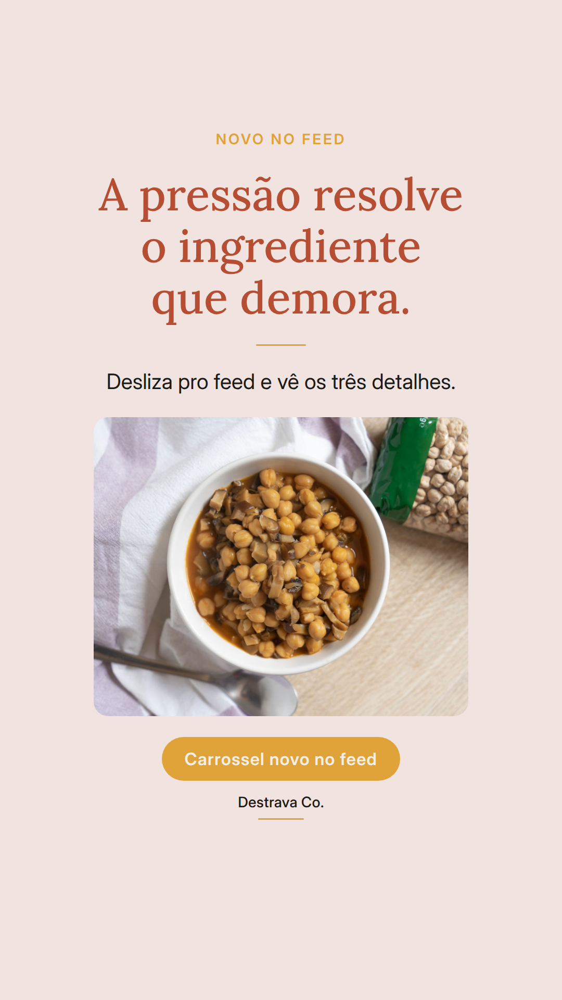
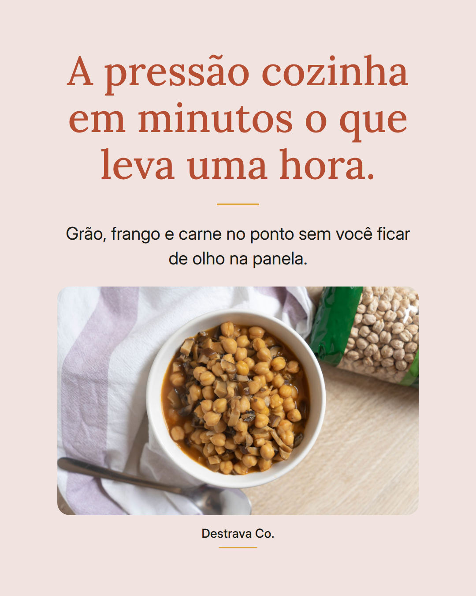
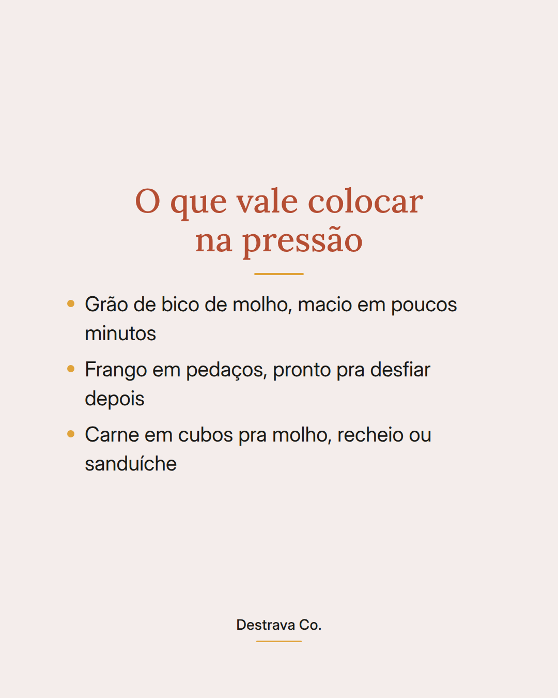
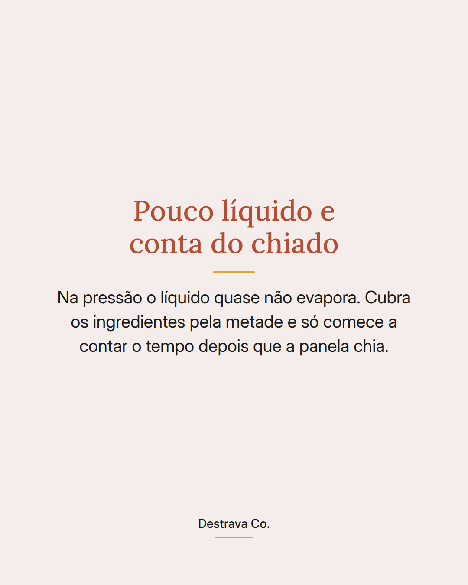
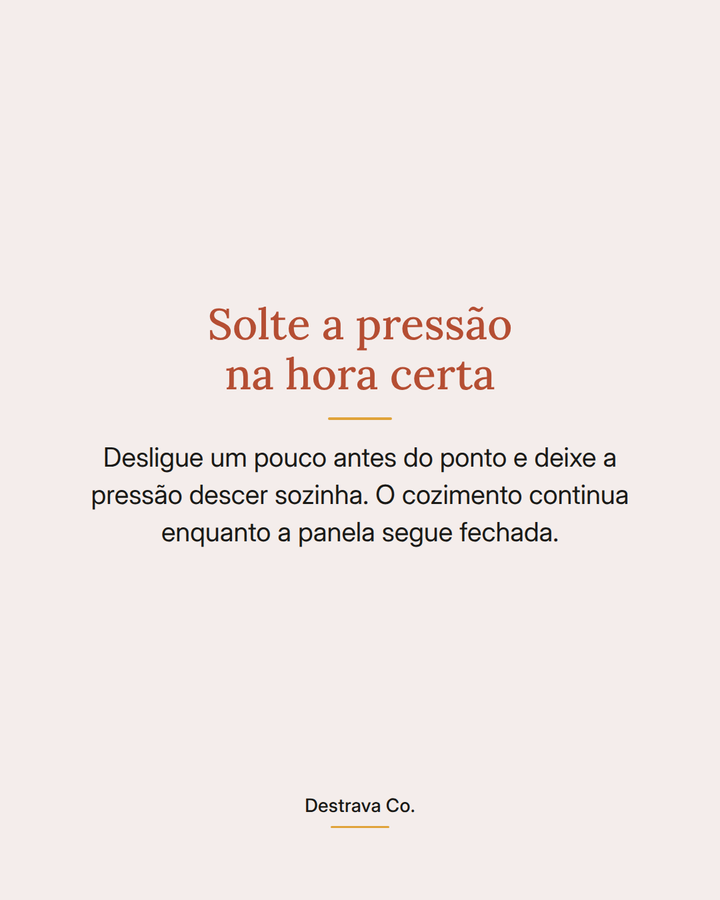

Panela de pressão é o atalho pro ingrediente que demora no jantar de dia de semana.
Grão de bico de molho, frango em pedaços e carne em cubos ficam macios em poucos minutos, sem você vigiar a panela.
Três detalhes mudam o resultado: pouco líquido, porque quase nada evapora ali dentro; o tempo começa a contar depois que a panela chia; e desligar um pouco antes do ponto deixa o cozimento terminar com a pressão descendo.
Enquanto a pressão trabalha, dá pra lavar a salada, pôr o arroz ou picar o que falta. O jantar fica pronto quase junto.
Salva pra lembrar na próxima vez que o ingrediente duro aparecer na geladeira e manda pra quem foge da pressão. Se quiser mais ideias curtas, o PDF com 20 receitas de até 15 minutos está esperando na bio.